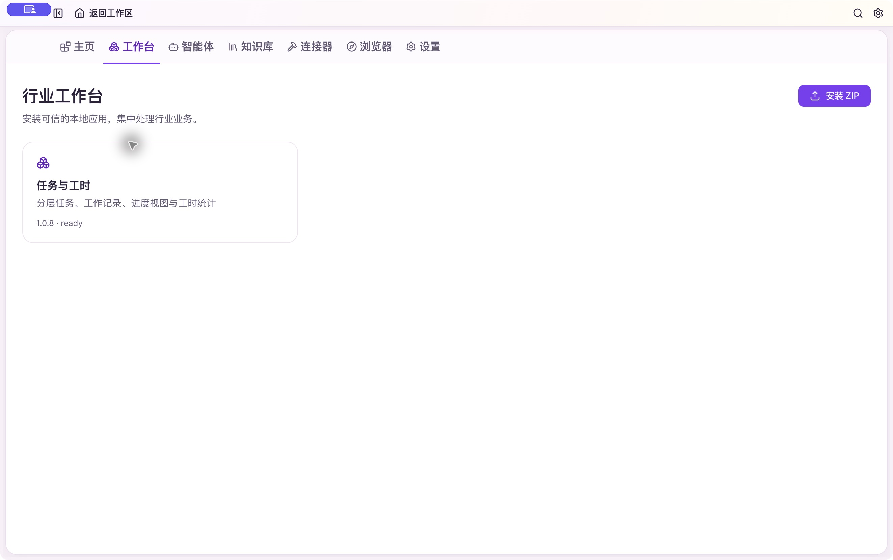
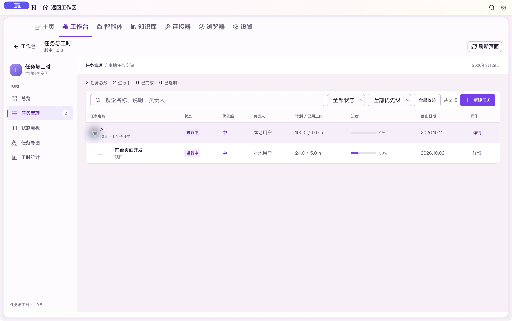
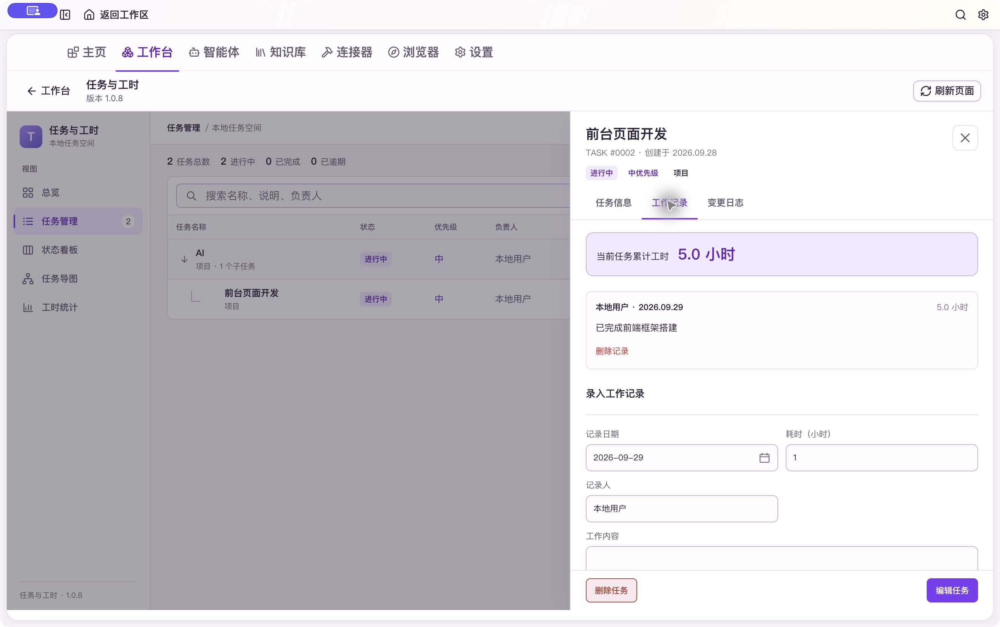
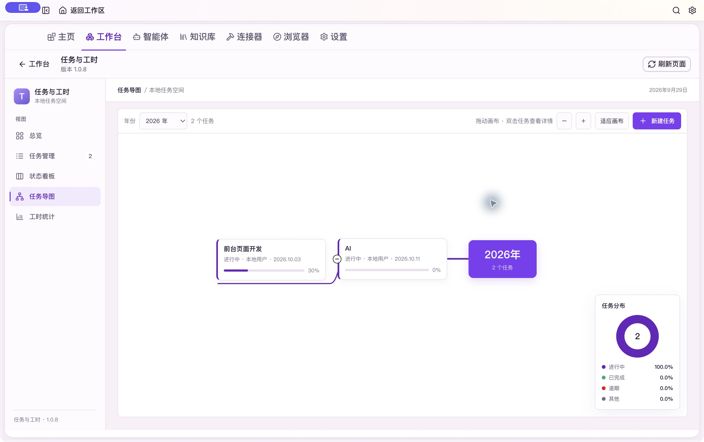
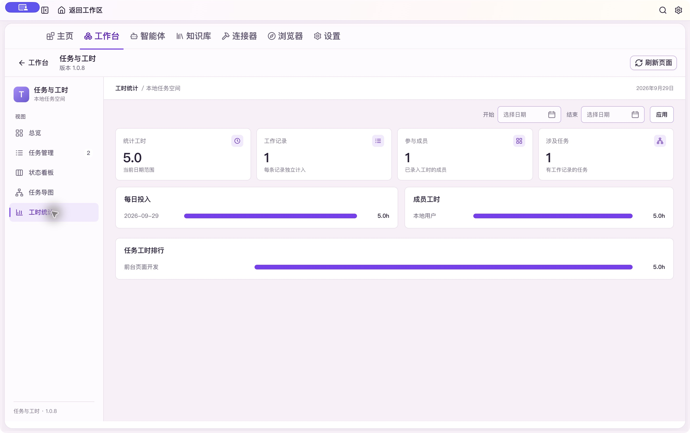
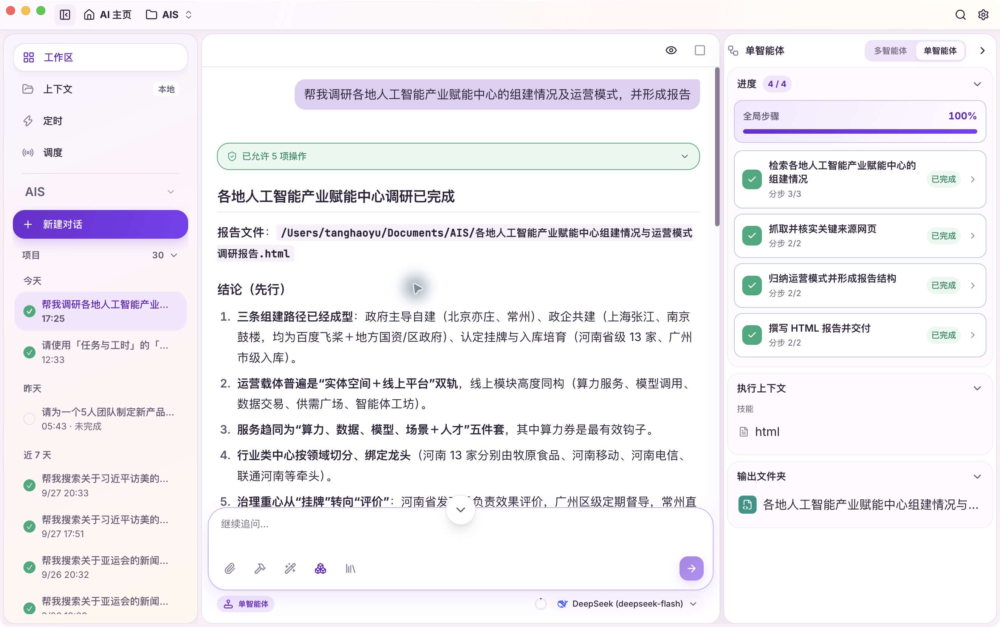
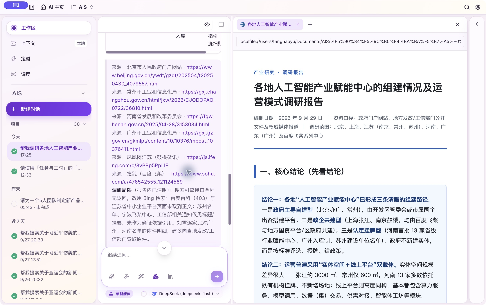
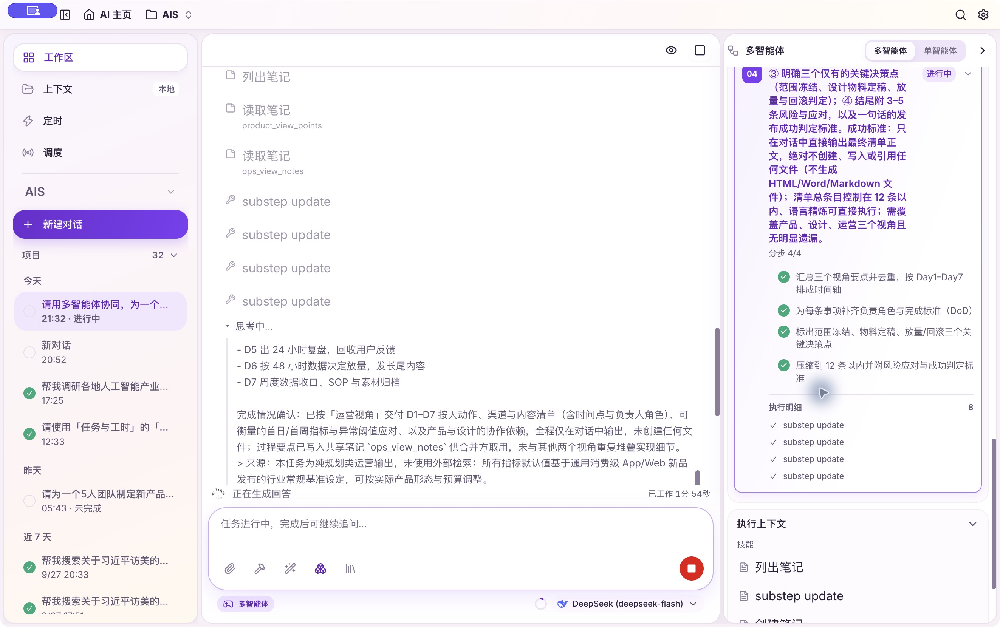
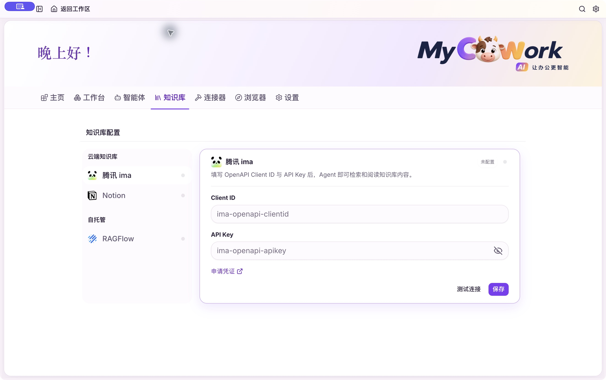

01
行业工作台 · 插件式扩展
以任务与工时为起点，按需装入更多行业应用。
01 / 安装可信 ZIP 应用包清单与文件校验，重启后生效
02 / 呈现工作台统一入口应用页面嵌入桌面客户端
03 / 运行Python 业务能力后端路由融入宿主进程
04 / 协作Agent 专用工具对话中查询业务数据与工时

从任务管理到轻量 ERP、行业台账与专业表单：按照统一插件规范持续扩展，形成面向不同场景的行业工作空间。
02
任务、进度与工时
分层任务、工作记录、导图与统计，沿着同一条工作流展开。
父任务展开，子任务清晰可见
任务管理 / 层级视图

工作记录与已用工时
任务详情 / 工作记录

任务导图，看清项目结构
可展开、收起与拖动

工时统计，随时回看投入
按日期、成员与任务汇总

03
单智能体，从回答到报告
在同一个对话里阅读结论，并打开交付文件继续查看。
研究结论直接呈现
真实完成会话

打开交付报告，正文即刻预览
HTML 报告 / 分屏查看

04
多智能体协同执行
任务分工、执行步骤与过程进展，在右侧面板持续可见。

此处展示真实执行过程画面；本次演示任务的最终汇总步骤未成功，因此不以该画面声明任务已完成。
05
知识库接入入口
知识源配置集中在工作区，供后续检索与引用。

画面展示配置入口；其中腾讯 ima 尚未配置，其他来源也未在这组实录中完成连接。